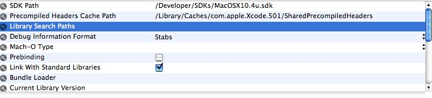
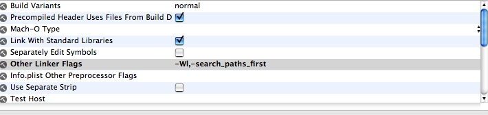

Q:
How do I link against a static version of a library when a dynamic version exists on the system?
A: Normally, the linker goes through each path in the search paths one at a time to find a dynamic version of the library. If none is found, it goes through each of those paths looking for a static version of the same library.
Note: There is no way to choose a static library over a corresponding dylib if both libraries are in the same directory without using the -l linker option and absolute paths to each library. The best way to explicitly control the selection of which version of the library is linked against is to keep the static and dynamic versions of the library in different directories. The library search paths must then be set to include the directories to search for your libraries, with the path to the static library preceding the path to the dynamic library. On the command line, this is done by using the -L linker option, followed by your directories to search. In Xcode, you use the Library Search Paths build setting, as shown in Figure 1.
Figure 1: The Library Search Paths build setting in Xcode.

During the build process, use the linker flag -search_paths_first. In Xcode, this option is set in the Other Linker Flags build setting, as shown in Figure 2. This linker option causes the linker to look in each of the search paths for a dynamic library and, if none is found it looks for a static library. If there is no library found the linker continue to search the remaining paths. This method is also useful when attempting to link against static libraries of your own when there is a dynamic version of the library in the standard system library search paths.
Figure 2: The Other Linker Flags build setting in Xcode.

Document Revision History
| Date |
Notes |
| 2006-10-24 |
First Version |
Posted: 2006-10-24
|